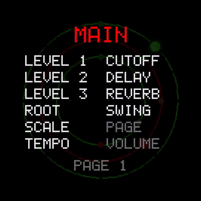
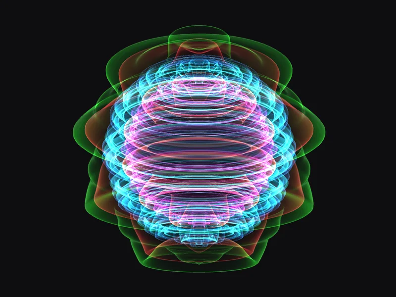

AMMONITE
A family of synthesizers that play themselves, in key
What they share
The instruments

Ammonite-Seed
Hardware · Daisy Seed · VST3 / CLAP plugin
The original: a three-voice arpeggiator synthesizer in a small printed box, with 12 knobs and a round screen that draws the music. The same panel and screen also run as a VST3 / CLAP plugin for Windows.
Listen, get the firmware or the plugin →

Ammonite Desktop
Windows · VST3 · CLAP · standalone
The idea without the hardware's limits: up to 16 channels, synthesized drums on the same clock as the harmony, effects, modulation and macros, and a stage where every channel is a glowing shell drawn from its own waveform.
See Ammonite Desktop →
Ammonite Mini
Android tablet
Ammonite Desktop made lean for a tablet: a native app with no stage, all the music. It opens the same patches as Desktop.
See Ammonite Mini →